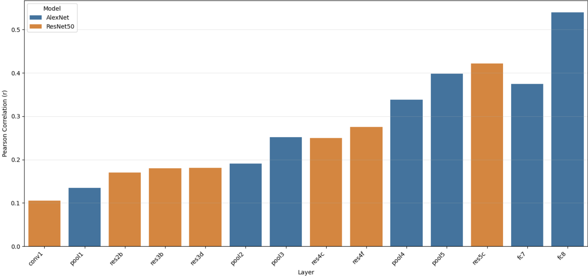
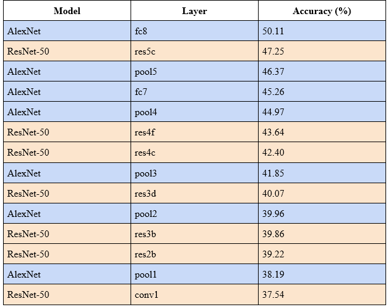
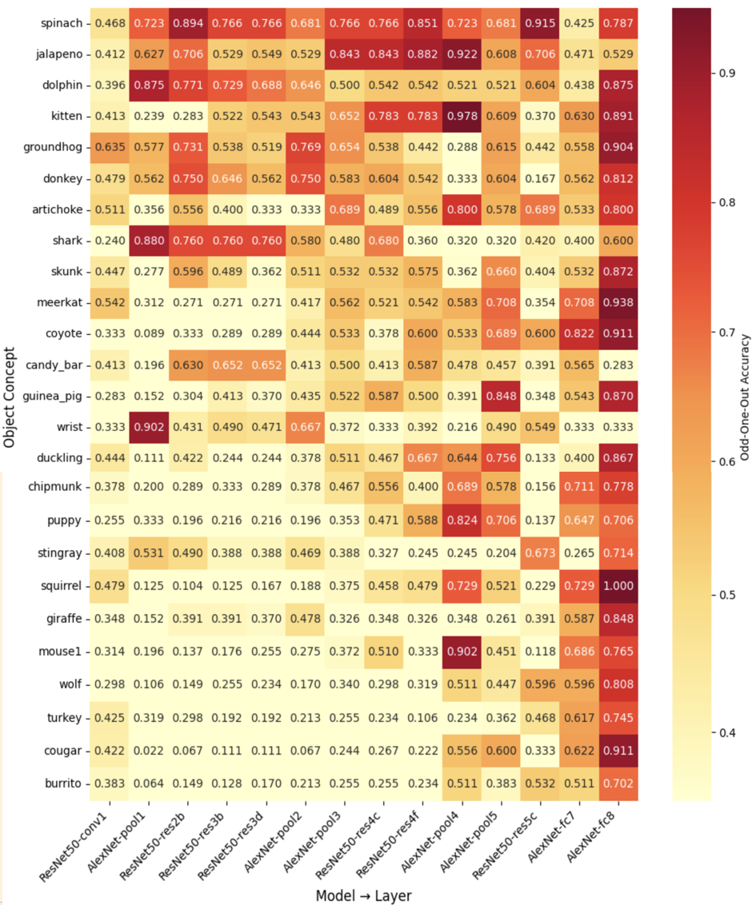

When Do Neural Networks Think Like Humans? Comparing Shallow and Deep CNN Representations on Image Similarity Task
Mar – Jun 2025
We compared layer-wise representations from AlexNet and ResNet-50 with human object similarity judgments from the THINGS dataset, using odd-one-out accuracy on 50,000 triplets and RSA. Alignment with human judgments increased in later layers of both models, and AlexNet unexpectedly aligned more closely than ResNet-50.
Layer-wise alignment with human judgments
Using representational similarity analysis (RSA), we correlated each layer's similarity matrix with a human similarity matrix built from SPoSE embeddings of the 1,854 THINGS concepts. Alignment rose in later layers of both models, peaking at AlexNet fc8 (r = .54) and ResNet-50 res5c (r = .42).

Odd-one-out accuracy
Both models agreed with human choices well above chance (33.3%), and agreement improved in later layers. AlexNet's final layer, fc8, scored highest (50.11%), ahead of ResNet-50's res5c (47.25%).

Category-level results
Performance also varied by object concept. Some concepts aligned best in late layers, such as coyote (0.911 in AlexNet fc8), while others reached high accuracy early, such as spinach (0.723 in AlexNet pool1).
